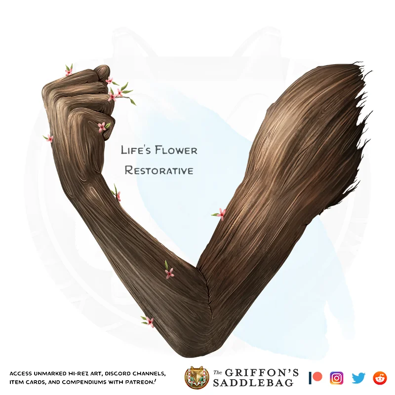

>The wooden arm that magically reacts to the princess is not just for show and has a deeper meaning. The branch that was grown into the arm is actaully a branch that was found near the dead Queen's gravestone. When the curious Lily asked Meave to help, Meave told Lily that she could by finding her a branch in the woods. A simple task for a little girl to fetch. When they went out toegther, Meave was confused on why she was passing so many branches but then relized that they were on the path to the graveyard, as Lily grabbed a branch that fell off of a small tree in a pot on her gravestone. Meave didn't know about this at the time because she was distraced by whispers in the graveyard saying "I will be by your side".